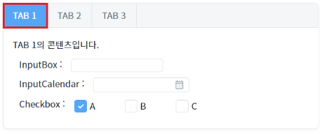
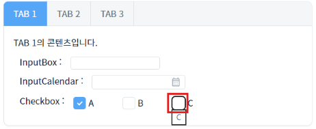
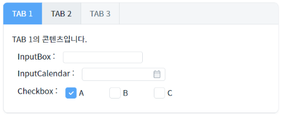
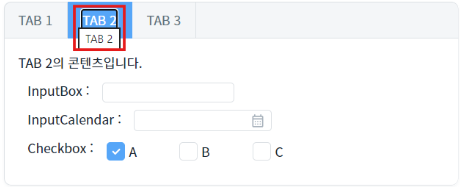
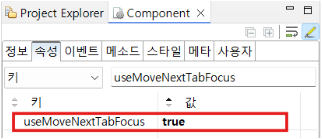

TabControl의 'useMoveNextTabFocus' 속성을 사용하여, tab 키로 포커스 이동 시 다음 탭으로 포커스가 이동하도록 구현한 예제입니다.
(기본 동작) useMoveNextTabFocus 미사용
useMoveNextTabFocus 사용
두 영역의 TabControl에서 tab키를 눌러 동작을 비교합니다.
예제 영역 'useMoveNextTabFocus : false (기본 값)'에서 테스트합니다.1
STEP 1: 탭 이동을 시작할 위치를 선택합니다.
TabControl의 첫번째 탭 'TAB 1'을 클릭합니다.
Image 1.브라우저(Chrome) 실행 예시

2
STEP 2: tab키로 이동합니다.
탭 내에서 포커스가 순서대로 이동합니다. 마지막 컴포넌트인 Checkbox까지 포커스가 이동됩니다.
Image 2.브라우저(Chrome) 실행 예시

3
STEP 3: 실행 결과를 확인합니다.
첫 번째 탭 내의 마지막 컴포넌트에서 한번 더 tab키를 누르면 다음 탭으로 이동되지 않고 포커스가 종료됩니다.
Image 3.브라우저(Chrome) 실행 예시

예제 영역 'useMoveNextTabFocus : true'에서 테스트합니다.1
STEP 1: 탭 이동을 시작할 위치를 선택합니다.
TabControl의 첫번째 탭 'TAB 1'을 클릭합니다.
Image 4.브라우저(Chrome) 실행 예시
2
STEP 2: tab키로 이동합니다.
탭 내에서 포커스가 순서대로 이동합니다. 마지막 컴포넌트인 Checkbox까지 포커스가 이동됩니다.
Image 5.브라우저(Chrome) 실행 예시
3
STEP 3: 실행 결과를 확인합니다.
다음 탭으로 이동합니다.
Image 6.브라우저(Chrome) 실행 예시

1
TabControl의 속성을 정의합니다.
[필수] useMoveNextTabFocus="true"
tab 안에 있는 컴포넌트를 tab키로 focus 이동시 마지막 컴포넌트에서 focus를 이동할 경우 다음 tab으로 focus 이동이 가능하다.
Image 7.웹스퀘어 스튜디오의 Component View - 속성 설정 예시

useMoveNextTabFocus